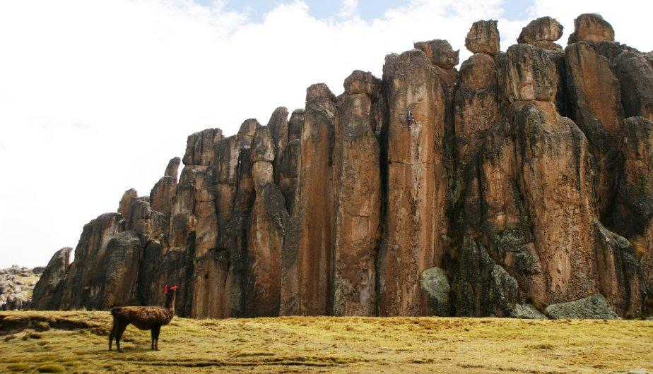

BOSQUE DE PIEDRAS DE HUAYLLAY


Ubicación: Este maravilloso lugar se encuentra a 40 km de la ciudad de Cerro de Pasco y a 312 km de Lima.podrás llegar después de un viaje de 8 horas.
Altura: 4 310 m.s.n.m
Clima: clima frío y con una permanente presencia de lluvias durante las estaciones de otoño, primavera y verano.
RESEÑA HISTÓRICA
En la época Incaica, fue parte del Camino Real Cápac Ñan, Algunas áreas fueron usadas como centros de acopio y Tambos, exclusivamente como refrigeradoras naturales para conservar los alimentos cada treinta kilómetros para los emisarios chasquis o para el mismo Inca , algo que en la actualidad se debería continuar haciendo”.
El bosque de Huayllay parece un colosal oasis petrificado en medio de una gran meseta desolada. Este lugar increíble generalmente se compara con el Bosque de Piedra Shilin en China y el Jardín de los Dioses en Estados Unidos.
En Huayllay, puedes encontrar gigantescas piedras de formas extrañas de todos los tamaños que se asemejan a humanos, animales y vegetales, como ángeles, guerreros, bestias, torres, esfinges, dinosaurios, entre otros. También hay singulares pórticos y arcos que desafían las leyes de la gravedad.
PLATO TÍPICO
PACHAMANCA
Ingredientes
-Piernas de cordero.-Costillas de cerdo.
-Pollos.
-Cuyes.
-Humitas.
-Papas.
-Camotes.
-Ocas.
-Habas.
-Choclos partidos por mitad.
-Plátanos.
-Ají panca.
-Pimienta.
-Sal.
-Kilo de queso Paria.
Preparación
Hacer un hoyo en la tierra donde se quiera preparar la Pachamanca. Encender una fogata cerca de donde se va a preparar la Pachamanca y calentar una regular cantidad de piedras (de preferencia planas). Una vez que las piedras estén bien calientes, con unas pinzas especiales o con una lampa colocar una cama de éstas con cuidado en el fondo del hoyo. Encima, ir colocando los alimentos por pisos: Primero se ponen los camotes, las papas, ocas y luego algunas piedras calientes encima (no muy pegadas unas a otras). En el segundo piso colocar las carnes aderezadas con sal, pimienta, ajo y ají panca al gusto (opcional: pimentón). Las carnes más utilizadas son el cordero, el lechón, cabrito y pollo. Encima colocar humitas o tamales, habas, cuyes, porciones de queso paria, plátanos y choclos. Para terminar, se sella la pachamanca con tierra seca. Se acostumbra a poner una cruz encima que será retirada por el padrino de la Pachamanca. Este será el encargado de abrirla. El tiempo de cocimiento de la Pachamanca varía entre 2 y 3 horas.